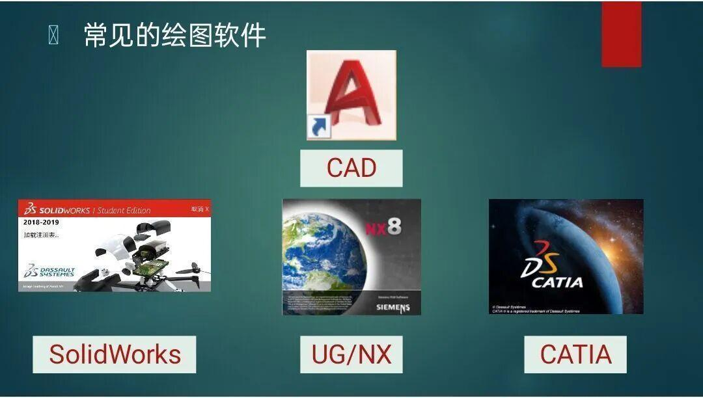
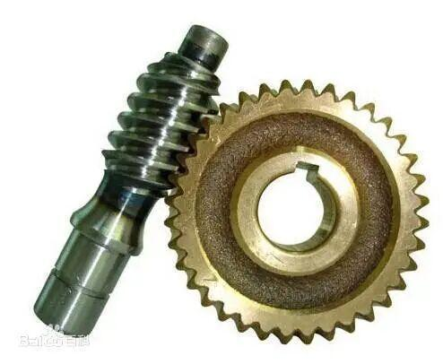
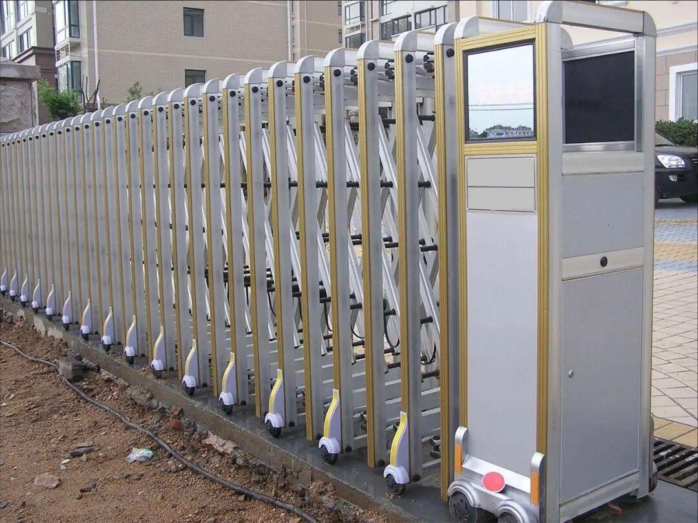
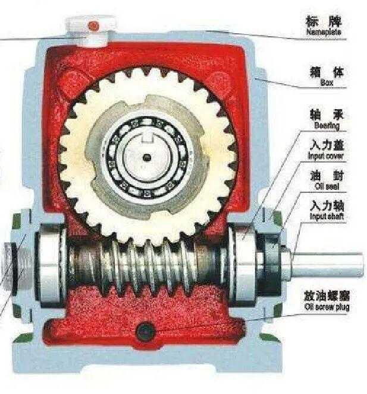

电协第三次线上教学

是新朋友吗？记得先点蓝字关注我哦～
电协教学又又又又又双叒叕来了，本周五我们迎来了第三次教学。
本次带来的是机械教学，让我们再回顾一下吧！


01


常见的绘图软件 |



02


蜗轮蜗杆 |  |
机构特点 | |
可以得到很大的传动比 | |
2 | 承载能力大 |
3 | 具有自锁结构 |
4 | 传动平稳，噪音小 |
5 | 传动效率低，磨损严重 |
蜗轮蜗杆结构常用来传递两交错轴之间的运动和动力。蜗轮与蜗杆在其中间平面内相当于齿轮与齿条，蜗杆又与螺杆形状相似。
蜗轮蜗杆在生活中用处广泛，其主要用途电动伸缩门，蜗轮蜗杆减速机。




03


机械设计过程概述 | |
形成设计构想和完善整体策略。 | |
2 | 确定机器初步结构 |
3 | 零件设计 |
4 | 设计的灵魂—计算，校核 |
以上就是本次教学的学习内容，大家是不是对机械有了一些了解了呢？
-END-
文字|孙恩汇
图片|孙恩汇